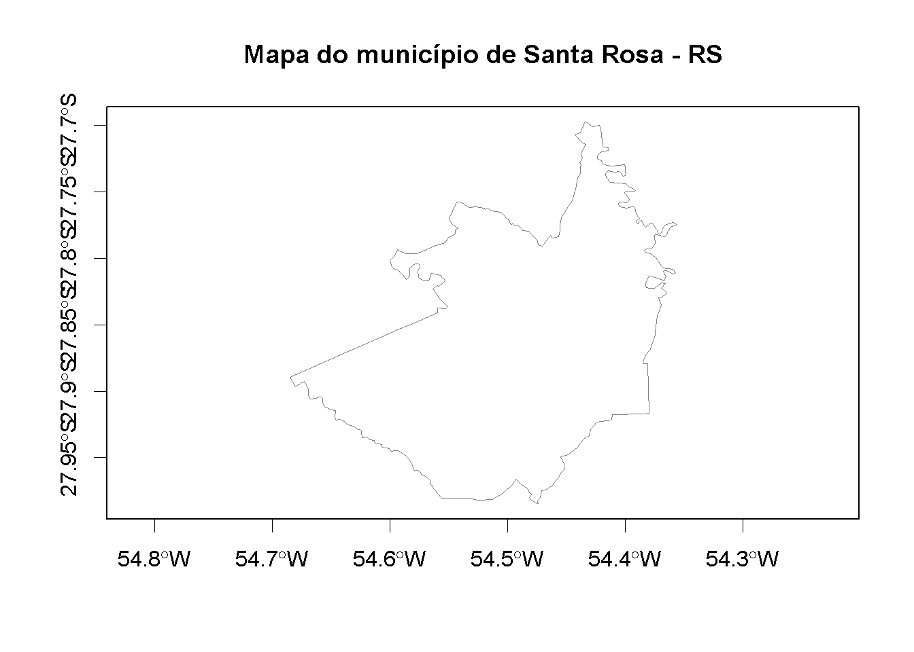
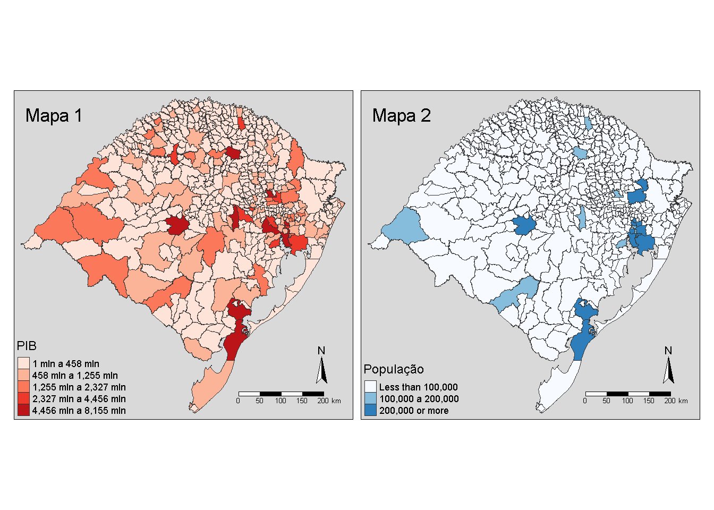
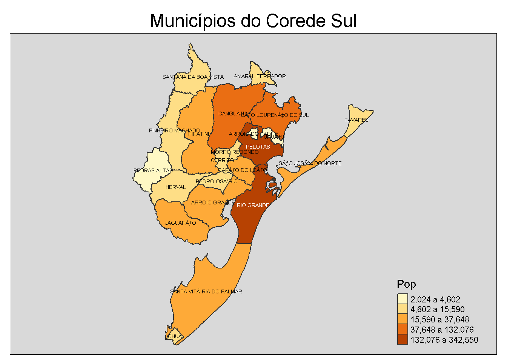
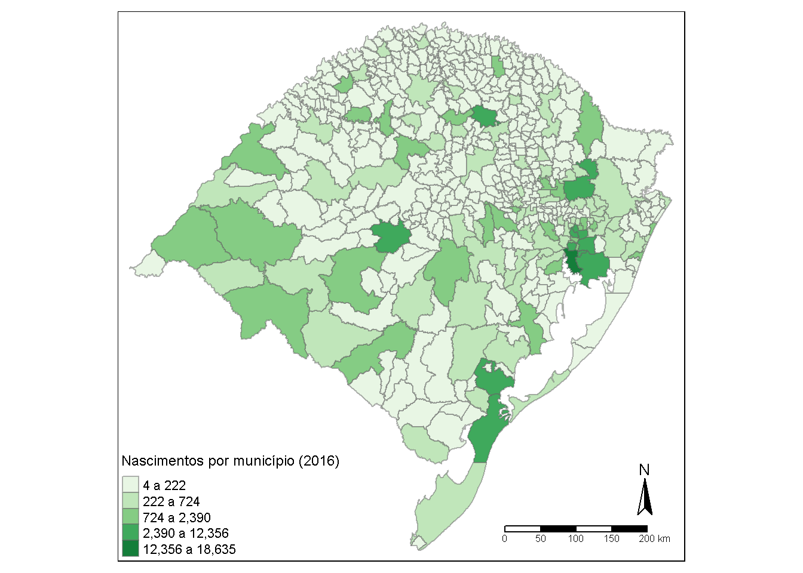

Capítulo 9 Produção de Mapas
Felipe Micail da Silva Smolski
Este capítulo almeja levantar o ferra mental básico para a construção de mapas simples no RStudio. Ainda, interessa demonstrar os comandos para a manipulação destes tipos de bases de dados, inclusive possibilitando a junção de indicadores de municípios, regiões e países. Estes dados podem ser advindos de institutos de pesquisas ou mesmo dados criados pelo estudante em suas análises.
Os pacotes utilizados neste capítulo são: tmap, maptools,
tmap e rgdal.
9.1 Introdução aos shapes
Existem vários softwares específicos para a produção de mapas, sejam produtos comerciais ou no formato software livre. A grande vantagem da utilização do R para criação de mapas é a utilização dos shapes disponibilizadas para vários programas.
Denominam-se shapes os arquivos que contém os elementos gráficos, em formato de ponto, linhas ou polígonos, contendo coordenadas geográficas para um elemento para que possa ser transformado em mapa. O shape é formado por três arquivos principais individuais que armazenam os dados: o arquivo “.shp”, “.shx” e “.dbf”. Além disto, podem ser acompanhados de arquivos “.prj”, o “.sbn” e o “.sbx” (Semace 2018).
Os shapefiles podem ser obtidos de várias fontes oficiais, como institutos de pesquisa e universidades. A seguir alguns links para download:
Forest Gis: http://forest-gis.com/2009/04/base-de-dados-shapefile-do-brasil-todo.html/
FEPAM: http://www.fepam.rs.gov.br/biblioteca/geo/bases_geo.asp
No exemplo abaixo, é utilizado um shape proveniente do IBGE representando os municípios do Estado do Rio Grande do Sul (ftp://geoftp.ibge.gov.br/organizacao_do_territorio/malhas_territoriais/malhas_municipais/municipio_2017/UFs/RS/rs_municipios.zip). Ao shape denominado municipios_IBGE será dado o nome de “MAPARS”, com a utilização do pacote raster para carregar a malha:
library(raster)
# Carregando o arquivo
MAPARS=shapefile("D:/Github/livroavancado/mapas/rs_municipios/43MUE250GC_SIR.shp")
# Excluindo dados inconvenientes
MAPARS=MAPARS[MAPARS$CD_GEOCMU !="4300001" & MAPARS$CD_GEOCMU !="4300002",]O arquivo MAPARS se constitui em um SpatialPolygonsDataFrame, objeto complexo que carrega informações dos dados (MAPARS@data) e demais informações com as coordenadas para criarem-se os mapas no R. Utilizando a função summary podem ser observados alguns dos os itens que compõe este objeto, o nome do municípios (NM_MUNICIP) o seu código IBGE (CD_GEOCMU), lembrando que cada município terá um código de IBGE diferente, informação extremamente útil como será visto posteriormente ao efetuar a manipulação da base de dados e a inclusão de informações provenientes de outras bases. Abaixo efetua-se também a padronização do código IBGE (comando substr), mantendo os 6 primeiros dígitos, sendo necessária para que posteriormente sejam agregados outros dados.
[1] "SpatialPolygonsDataFrame"
attr(,"package")
[1] "sp"Object of class SpatialPolygonsDataFrame
Coordinates:
min max
x -57.65 -49.69
y -33.75 -27.08
Is projected: FALSE
proj4string : [+proj=longlat +ellps=GRS80 +no_defs]
Data attributes:
NM_MUNICIP CD_GEOCMU
Length:497 Length:497
Class :character Class :character
Mode :character Mode :character # Corrigindo os dados do código IBGE dos municípios
MAPARS$CD_GEOCMU=substr(MAPARS$CD_GEOCMU,1,6)
# Vizualização dos dados principais
head(MAPARS@data) NM_MUNICIP CD_GEOCMU
0 ACEGUÃ\201 430003
1 Ã\201GUA SANTA 430005
2 AGUDO 430010
3 AJURICABA 430020
4 ALECRIM 430030
5 ALEGRETE 430040Note novamente que este objeto pertence a uma classe diferente (SpatialPolygonsDataFrame), indicando que é constituída especialmente de um conjunto de polígonos para a construção de mapas conjuntamente com o carregamento de dados.
A seguir, a função plot() pode ser utilizada para a plotagem da malha carregada:

Um exercício simples é a filtragem dos dados do shape pelo nome do município, obtendo assim apenas o mapa da(s) unidade(s) escolhida(s):
9.2 Pacote tmap
O pacote tmap (Tennekes 2018) é utilizado para gerar mapas temáticos com relativa facilidade, sendo possível ajustar todos os itens de visualização (legendas, cores, bordas, alinhamento, etc.) para um ajuste desejado do pesquisador. Todas as funções do pacote podem ser encontradas em https://www.rdocumentation.org/packages/tmap/versions/2.2 ou no endereço https://www.jstatsoft.org/article/view/v084i06 como exemplos.
Inicialmente utiliza-se a função tm_shape para carregar a base, tm_fill para plotar o fundo e tm_borders cria as bordas entre os municípios. A função tmap_mode não é obrigatória, e varia da apresentação tradicional do mapa (“plot”) e da apresentação para web (“view”).

9.2.1 Adicionando dados ao mapa
Para enriquecer a análise, serão incluídos novos dados relativos aos municípios do Rio Grande do Sul provenientes da FEE (2016), como o indicador de IDESE (Índice de Desenvolvimento Socioeconômico), PIB (Produto Interno Bruto), população, etc.
#Carrega a planilha com as informações
library(readr)
RS2013 <- read_delim("mapas/RS2013.csv",
";", escape_double = FALSE, trim_ws = TRUE)
# Corrigindo o campo com o código do IBGE
names(RS2013)[3]="CD_GEOCMU"
# Corrigindo os dados do código IBGE dos municípios
RS2013$CD_GEOCMU=substr(RS2013$CD_GEOCMU,1,6)
head(RS2013)# A tibble: 6 x 20
Label_N COREDE CD_GEOCMU IDESE_2013 POUPANCA OP_CREDITO `OBRIGACOES _RE~
<chr> <chr> <chr> <chr> <dbl> <dbl> <dbl>
1 Alto A~ "Alto~ 430055 0,7973015~ NA NA NA
2 Barros~ "Alto~ 430200 0,6103697~ 7647609 27295139 5931
3 Campos~ "Alto~ 430410 0,7352054~ NA NA NA
4 Espumo~ "Alto~ 430750 0,79296863 45673907 230697134 66237
5 Fontou~ "Alto~ 430830 0,6336514~ 13985159 54390691 4177
6 Gramad~ "Alto~ 430915 0,6578415~ 1119359 2073680 0
# ... with 13 more variables: DEP_A_VISTA_PRIV <dbl>, DEP_A_VISTA_GOV <dbl>,
# DEP_PRAZO <dbl>, COOP_CRED <dbl>, CEF <dbl>, BANCO_COM <dbl>,
# N_VINCULOS_EMP <dbl>, DENS_DEM_HABKM2 <dbl>, IMPOSTOS <dbl>,
# AREA_KM2 <dbl>, PIB_PERC <dbl>, PIB <dbl>, POPULACAO <dbl>Para agregar estas informações aos dados das malhas, é preciso em primeiro lugar que se tenha um campo em comum único dos arquivos. Neste caso, o código do IBGE dos municípios (“CD_GEOCMU”) será utilizado, sendo que precisa ser exatamente igual nos dois objetos que se quer unir, para que as informações de determinado município sejam corretamente unidas às informações geográficas da malha para o mapa.
#Une a base de dados da planilha com o mapa pelo nome do município
RS2013MAPA=merge(MAPARS,RS2013,by="CD_GEOCMU", all.x=T)
names(RS2013MAPA) [1] "CD_GEOCMU" "NM_MUNICIP"
[3] "Label_N" "COREDE"
[5] "IDESE_2013" "POUPANCA"
[7] "OP_CREDITO" "OBRIGACOES _RECEBIMENTO"
[9] "DEP_A_VISTA_PRIV" "DEP_A_VISTA_GOV"
[11] "DEP_PRAZO" "COOP_CRED"
[13] "CEF" "BANCO_COM"
[15] "N_VINCULOS_EMP" "DENS_DEM_HABKM2"
[17] "IMPOSTOS" "AREA_KM2"
[19] "PIB_PERC" "PIB"
[21] "POPULACAO" CD_GEOCMU NM_MUNICIP Label_N COREDE IDESE_2013 POUPANCA
1 430003 ACEGUÃ\201 Acegu<e1> Campanha 0,718832327 654998
2 430005 Ã\201GUA SANTA <c1>gua Santa Nordeste 0,867600828 5771664
3 430010 AGUDO Agudo Central 0,702817421 60413751
4 430020 AJURICABA Ajuricaba Noroeste Colonial 0,785470135 10097428
5 430030 ALECRIM Alecrim Fronteira Noroeste 0,677111834 11317058
6 430040 ALEGRETE Alegrete Fronteira Oeste 0,726877131 143979215
OP_CREDITO OBRIGACOES _RECEBIMENTO DEP_A_VISTA_PRIV DEP_A_VISTA_GOV DEP_PRAZO
1 2123323 990 436095 211613 0
2 58309611 40094 1814681 89008 3205509
3 129527759 28351 7005194 593901 5826631
4 89098650 35621 4739225 1116209 2322985
5 14649086 265 1754832 150166 740890
6 747409945 232866 42122392 1138492 63194800
COOP_CRED CEF BANCO_COM N_VINCULOS_EMP DENS_DEM_HABKM2 IMPOSTOS AREA_KM2
1 NA NA 1 1075 2.922e+09 7712922 1549383
2 NA NA 1 743 1.293e+08 2339861 291792
3 1 1 3 3374 3.105e+09 26733502 536114
4 NA NA 2 1610 2.223e+08 12668813 323239
5 NA NA 2 690 2.163e+09 3193931 314743
6 NA 1 6 20091 9.794e+09 96877929 7803954
PIB_PERC PIB POPULACAO
1 383451 1.778e+08 4623
2 6343962 2.435e+08 3825
3 206121 3.537e+08 17044
4 2715728 2.015e+08 7568
5 1202022 8.426e+07 6905
6 1902703 1.504e+09 780569.2.2 Plotando o mapa e melhorando a visualização
Após unidas as informações da malha e dos índices para todos os municípios, é possível criar o mapa temático. Além de utilizar a função tm_shape para carregar os novos dados e tm_fill inclui a área de cada município (KM\(^2\)). Ainda é possível definir opções de formato (tm_format_Europe2), de estilo (tm_style_classic), ajustar a legenda (tm_legend), incluir o compasso (tm_compass), a escala (tm_scale_bar).
tm_shape(RS2013MAPA)+
tm_fill("AREA_KM2", auto.palette.mapping=FALSE,
title="Área por município")+
tm_format_Europe2()+
tm_style_classic()+
tm_legend(position=c("left","bottom"))+
tm_compass()+
tm_scale_bar()+
tm_borders(alpha=.5)+
tm_bubbles(size = 'PIB',col = '#b3de69', title.size='PIB') +
tm_legend(legend.format = list(text.separator= "a"))
Algumas opções de layout podem ser escolhidas pelo pesquisador com as funções:tm_format_World,tm_format_World_wide, tm_format_Europe, tm_format_Europe2, tm_format_Europe_wide, tm_format_NLD, tm_format_NLD_wide, tm_format_NLD_wide. Seguem as opções de estilo do gráfico:tm_style_white, tm_style_gray, tm_style_natural, tm_style_grey, tm_style_cobalt, tm_style_col_blind, tm_style_albatross, tm_style_beaver, tm_style_bw, tm_style_classic.
Abaixo segue um exemplo de criação e plotagem de múltiplos mapas na mesma imagem. A função style determinda como serão determinadas as cores do mapa, juntamente com a função palette. Já a função breaks ajuda a determinar os pontos de corte para a plotagem das cores, no primeiro mapa utilizando a função quantile e no segundo determinando intervalos de valores pré-determinados pelo autor.
tm_shape(RS2013MAPA) +
tm_polygons(c("PIB", "POPULACAO"),
style=c("kmeans","fixed"),
palette=list("Reds", "Blues"),
auto.palette.mapping=FALSE,
breaks=list(quantile(RS2013MAPA$POPULACAO),
c(-Inf,100000,200000,Inf)),
title=c("PIB", "População")) +
tm_format_World() +
tm_style_grey()+
tm_compass()+
tm_scale_bar()+
tm_legend(legend.format = list(text.separator= "a"))+
tm_layout(legend.position = c("LEFT","BOTTOM"),
legend.frame = FALSE, title = c("Mapa 1","Mapa 2"))
É possível ainda efetuar a filtragem de uma determinada característica para a criação do mapa. No exemplo, são filtrados os municípios do Corede Sul:
tm_shape(RS2013MAPA[RS2013MAPA$COREDE =='Sul',]) +
tm_polygons("POPULACAO", title="Pop",
style="kmeans", text="Label_N") +
tm_facets("COREDE") +
tm_text("NM_MUNICIP", scale=0.45)+
tm_style_grey()+
tm_layout(inner.margins = c(.03,.03,.03,.03),
main.title = "Municípios do Corede Sul",
main.title.position = 'center')+
tm_legend(legend.format = list(text.separator= "a")) 
9.2.3 Utilizando dados de fontes externas: pacote datasus
Encontrar informações de bases de dados que podem ser diretamente utilizadas no R é de extrama importância aos pesquisadores. Neste exemplo são demonstrados alguns comandos para utilizar o pacote datasus (Prado Siqueira 2018), que agiliza a utilização de alguns dados do Ministério da Saúde (http://www2.datasus.gov.br/DATASUS/index.php?area=02).
Utilizando o pacote devtools (library(devtools)) é feita ainstalação do pacote datasus diretamente do repositório Github pelo comando install_github("rpradosiqueira/datasus").
Após instalado o pacote datasus, utiliza-se a função sinasc_nv_uf para carregar a quantidade de nascimentos por município:
library(datasus)
nascimentos=sinasc_nv_uf(uf = "rs",
periodo = c(2014:2016),
coluna = "Ano do nascimento")
head(nascimentos) Município 2014 2015 2016 Total
1 TOTAL 143315 148359 141411 433085
2 430003 Aceguá 73 55 49 177
3 430005 Água Santa 48 36 43 127
4 430010 Agudo 162 161 165 488
5 430020 Ajuricaba 61 68 78 207
6 430030 Alecrim 59 48 57 164Efetua-se uma limpeza da linha de total, bem como a criação de uma coluna com o código do IBGE (“CD_GEOCMU”):
nascimentos=nascimentos[-1,]
library(tidyr)
nascimentos <- separate(nascimentos, `Município`, c("CD_GEOCMU", "NM_MUNICIP"), sep = 6)
head(nascimentos) CD_GEOCMU NM_MUNICIP 2014 2015 2016 Total
2 430003 Aceguá 73 55 49 177
3 430005 Água Santa 48 36 43 127
4 430010 Agudo 162 161 165 488
5 430020 Ajuricaba 61 68 78 207
6 430030 Alecrim 59 48 57 164
7 430040 Alegrete 925 954 858 2737Após é possível criar novo mapa (“RS2013MAPAN”), unindo as informações novas com o mapa anterior:
[1] "CD_GEOCMU" "NM_MUNICIP.x"
[3] "Label_N" "COREDE"
[5] "IDESE_2013" "POUPANCA"
[7] "OP_CREDITO" "OBRIGACOES _RECEBIMENTO"
[9] "DEP_A_VISTA_PRIV" "DEP_A_VISTA_GOV"
[11] "DEP_PRAZO" "COOP_CRED"
[13] "CEF" "BANCO_COM"
[15] "N_VINCULOS_EMP" "DENS_DEM_HABKM2"
[17] "IMPOSTOS" "AREA_KM2"
[19] "PIB_PERC" "PIB"
[21] "POPULACAO" "NM_MUNICIP.y"
[23] "2014" "2015"
[25] "2016" "Total" Então pode ser criado o mapa com as informações de nascimentos por município. Neste caso, foi utilizado o style denomnado kmeans, pois utilizamos os quartis para determinar as faixas de cores das quantidades de nascimentos:
0% 25% 50% 75% 100%
4 28 55 175 18635 tm_shape(RS2013MAPAN)+
tm_fill("2016", auto.palette.mapping=FALSE,
title="Nascimentos por município (2016)",
textNA="NA",
palette="Greens",
style = "kmeans",
breaks = quantile(RS2013MAPAN$`2016`))+
tm_legend(position=c("left","bottom"))+
tm_compass()+
tm_scale_bar()+
tm_borders(alpha=.5)+
tm_legend(legend.format = list(text.separator= "a")) +
tm_layout(legend.position = c("LEFT","BOTTOM"),
legend.frame = FALSE)Warning: The argument auto.palette.mapping is deprecated. Please use midpoint
for numeric data and stretch.palette for categorical data to control the palette
mapping.
Referências
FEE. 2016. «Fundação de Economia e Estatística Siegfried Emanuel Heuser - FEEDADOS». http://feedados.fee.tche.br/feedados/.
Prado Siqueira, Renato. 2018. «datasus: An Interface to DATASUS System». https://cran.r-project.org/package=datasus.
Semace. 2018. «Shape – Definições e Conversão». http://www.semace.ce.gov.br/2011/06/shape-definicoes-e-conversao/.
Tennekes, Martijn. 2018. «{tmap}: Thematic Maps in {R}». Journal of Statistical Software 84 (6): 1–39. https://doi.org/10.18637/jss.v084.i06.